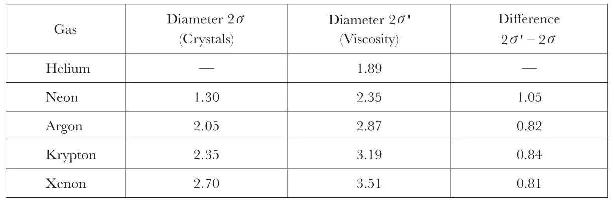
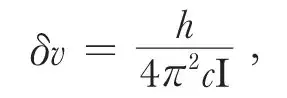
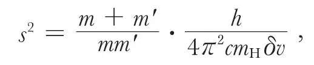
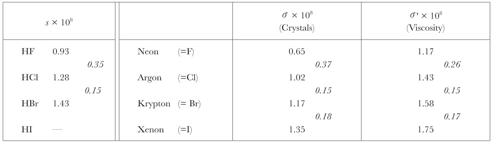

中文
中文W. L. Bragg and H. Bell
Editor’s Note
In the early 1920s, physicists were struggling to understand the physical structure of atoms using a model introduced by Bohr in 1913, in which electrons filled up shells around the nucleus. Bohr’s arguments predicted that elements within any particular period (row) of the periodic table should have roughly the same atomic size, but that atomic size should jump markedly when moving from one period to the next. Here Lawrence Bragg and H. Bell report data on the dimensions of atoms that support Bohr’s ideas. Estimating these dimensions from crystal densities and liquid viscosity, they find that elements near the end of rows in the table have almost identical dimensions, while a definite increase happens from one period to the next. 中文
CERTAIN relations which are to be traced between the distances separating atoms in a crystal make it possible to estimate the distance between their centres when linked together in chemical combination. On the Lewis-Langmuir theory of atomic constitution, two electro-negative elements when combined hold one or more pairs of electrons in common, so that the outer electron shell of one atom may be regarded as coincident with that of the other at the point where the atoms are linked together. From this point of view, estimates may be made (W. L. Bragg, Phil. Mag., vol. XI, August, 1920) from crystal data of the diameters of these outer shells. The outer shell of neon, for example, was estimated from the apparent diameters of the carbon, nitrogen, oxygen, and fluorine atoms, which show a gradual approximation to a minimum value of 1.30×10–8 cm. The diameters of the inert gases as found in this way are given in the second column of the following table:

In the third column are given Rankine’s values (A. O. Rankine, Proc. Roy. Soc., A, vol. XCVIII, 693, pp. 360–374, February, 1921) for the diameters of the inert gases calculated from their viscosities by Chapman’s formula (S. Chapman, Phil. Trans. Roy. Soc., A, vol. CCXVI, pp. 279–348, December, 1915). These are considerably greater than the diameters calculated from crystals, but this is not surprising in view of our ignorance both of the field of force surrounding the outer electron shells and of the nature of the electron-sharing which links the atoms together, for it is quite possible that their structures might coalesce to a considerable extent. The constancy of the differences between the two estimates given in the fourth column shows that the increase in the size of the atom as each successive electron shell is added is nearly the same (except in the case of neon), whether measured by viscosity or by the crystal data. Further, Rankine has shown that the molecule Cl2 behaves as regards its viscosity like two argon atoms with a distance between their centres very closely equal to that calculated from crystals, and that the same is true for the pairs Br2 and krypton, I2 and xenon. 中文
We see, therefore, that the evidence both of crystals and viscosity measurements indicates that (a) the elements at the end of any one period in the periodic table are very nearly identical as regards the diameters of their outer electron shells, and (b) in passing from one period to the next there is a definite increase in the dimensions of the outer electron shell, the absolute amount of this increase estimated by viscosity agreeing closely with that determined from crystal measurements. 中文
A further check on these measurements is afforded by the infra-red absorption spectra of HF, HCl, and HBr. The wave-number difference δv between successive absorption lines determines the moment of inertia I of the molecule in each case, the formula being

where h is Planck’s constant and c the velocity of light. 中文
It is therefore possible to calculate the distances between the centres of the nuclei in each molecule, for

where m and m' are the atomic weights relative to hydrogen and mH the mass of the hydrogen atom. The following table gives these distances (E. S. Imes, Astroph. Journal, vol. 1, p. 251, 1919). It will be seen that there are again increases in passing from F to Cl and Cl to Br, which agree closely with the increases in the radii σ of the electron shells given by the crystal and viscosity data. 中文

The increase from fluorine to chlorine of 0.35 × 10–8 cm confirms the estimate given by crystals of 0.37 × 10–8 cm, as against the estimate 0.26 × 10–8 cm given by viscosity data. It follows from the above that the distance between the hydrogen nucleus and the centre of an electro-negative atom to which it is attached is obtained by adding 0.26 × 10–8 cm to the radius of the electro-negative atom as given by crystal structures. The radius of the inner electron orbit, according to Bohr’s theory, is 0.53 × 10–8 cm, double this value. The crystal data, therefore, predict the value δv =13.0 cm–1 for the HI molecule, corresponding to a distance 1.61 × 10–8 cm between their atomic centres. 中文
This evidence is interesting as indicating that the forces binding the atoms together are localised at that part of the electron shell where linking takes place. 中文
(107, 107; 1921)
W. L. Bragg, H. Bell: Manchester University, March 16.